RailCOMPLETE commands
In this section, all available RailCOMPLETE commands with description are listed.
RC-ABOUT
Opens the RailCOMPLETE® About window.The About window displays version number, license information as well as the end user license agreement (EULA).
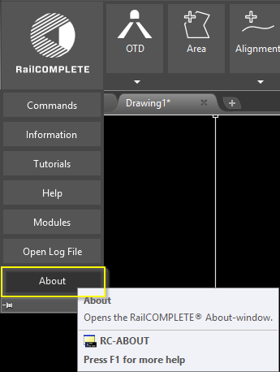
RC-ASSISTASSIGNVERTICALPROFILE
Assign vertical profile to alignment using the 'normal', 'gradient' or 'straight' method. The resulting vertical profile will span the full length of the alignment and will depend on the selected method.Normal method: The trunk alignments’ vertical curves, at each end of the connecting alignment, are copied, provided that they don’t overlap. If they don’t overlap, then a vertical curve is inserted from the low mileage end’s vertical curve end and another vertical curve is inserted at the high mileage end’s vertical curve start. The two vertical curves are connected with a straight line (constant gradient). If no solution exists, try to reduce the vertical curve radius. Elevations are copied from the respective trunk alignment at each end.
Gradient method: Possible vertical curves at each end of the connecting alignment are ignored, but the actual gradients at the end points are respected . A vertical curve is inserted at the low mileage end and another is inserted at the high mileage end. The two vertical curves are connected with a straight line (constant gradient). If no solution exists, try to reduce the vertical curve radius. Elevations are copied from the respective trunk alignment at each end.
Straight method: The low mileage end is connected with a straight line to the high mileage end. Elevations are copied from the respective trunk alignment at each end.
RC-ASSISTCREATECONNECTIONOBJECTS
The current geometry is compared to stored geometries for connection objects such as switches. All measures disregard the Z coordinate, i.e. elevation and cant data are not considered, only horizontal geometry.RC-ASSISTCREATEEARTHING
Inserts earthing graphics for all assigned earthing, and sets earthing alignment to closest earthing alignment for objects without earthing.RC-ASSISTCREATEGEOMETRYANDPROFILEANNOTATIONOBJECTS
Insert section limit and section limit objects for each horizontal segment along the selected tracks. A section limit can be a PVI or a curve-line transition.RC-ASSISTCREATEINTERLOCKINGCONTROLTABLES
Export all possible elementary train routes into a new Excel document.RC-ASSISTSETALIGNMENTMILEAGEINHERITANCE
Automatically assigns mileage parent for each alignment in the selection set and inherits the mileage from the parent.The algorithm will search the database for candidate alignments. The candidate which is closest to the selected alignment's endpoints will be taken as the mileage parent.
Mileage inheritance through the start point takes precedence over the end point when candidates are present at both extremities.
An alignment can inherit its mileage from another alignment by assigning a "mileage parent".
The alignment attempts to re-inherit its mileage whenever the mileage parent is updated to ensure data consistency.
The mileage inheritance can also be edited manually in the alignment manager.
RC-ATTACHXREF
Attach RailCOMPLETE documents to drawing as Xrefs. A RCXref is created for each attached document.RC-AUDITALIGNMENT
Audit alignment geometry, data consistency, search for missing data, etc.Some issues are also fixed during audit.
RC-AUDITALL
Evaluates the integrity of RailCOMPLETE® objects in current drawing and fixes possible errors.RC-AUDITALLRELATIONS
Audit relations in drawing and re-connects one-way relations if possible.RC-AUDITCONNECTIONOBJECT
Audits and fixes the configuration of the selected connection objects according to the local geometry and the given connection definitions.RC-AUDITSECTIONS
Checks the references for all alignment sections.RC-AUDITUNIQUEIDS
Assigns new id to objects with duplicate id'sRC-BINDTOSELECTEDALIGNMENT
Triggers the “Bind” mode. The mileage indicator line will use the last selected alignment (even if deselected) as data source.RC-BINDXREF
Converts Xref into a block, making it a permanent part of the drawing.RC-BREAKALIGNMENT
Break one or more alignments. Erases the old alignment and transfers all elements and attached objects to the new alignment(s).RC-BROWSECOMMANDS
The command browser is a convenient way to search through all available commands.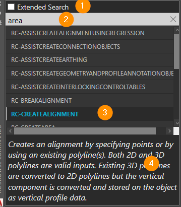
Use extended search (1) to search through the command description.
Search for the command or description in the search field (2).
Use arrow keys to step up/down.
Start the command by double-click or by hitting enter on the current command (3).
The command description is shown below (4).
RC-COPYANNOTATIONSALONGPATHSTODRAWING
Converts transient annotations along current paths to permanent objects in drawing.RC-COPYANNOTATIONSTODRAWING
Converts transient annotations to permanent objects in drawing.RC-COPYBRAKINGCURVETOCLIPBOARD
Copies the last executed braking curve calculation to clipboard.RC-COPYPOSITIONTOCLIPBOARD
Copies the currently displayed position-details to the clipboard.RC-COPYSELECTIONALONGPATH
Produces copies of the selected group of signals at the desired increments (which may be zero). Multiple copies can be made by adjusting theAmount variable. The additional copies will be placed an increment's length away from the previous copy, resulting in an equidistant sequence of copies of an arbitrary size decided by the user.
RC-CREATEALIGNMENT
Creates an alignment by drawing segments, by offsetting an existing alignment, or by converting existing polylines. Both 2D and 3D polylines may be converted. Existing 3D polylines are converted to 2D polylines but the vertical component is converted and stored on the object as vertical profile data. The drawing mode allows the user to lock parameters and to specify segment type, directions, radiuses, differentiability and more.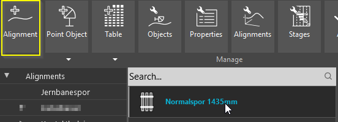
First, the alignment type is chosen in the dropdown menu from the ribbon, or by a prompt when using the command line. Next, the drawing mode is started by selecting the starting point for the alignment, or alternatively by choosing Polyline (convert polylines) or Offset (create alignments at offset distances, see the command RC-OFFSETALIGNMENT). If the pickfirst selection already contains polylines, this step is skipped and the Polyline choice is used. If the selection set contains numerous polylines (>4), the user can choose among two naming schemes:
- Enter name for each alignment separately
- Enter a name for the first alignment and the name is incremented for each successive polyline in the selection set
Drawing mode controls:
- Left-click: Commit the segment that is currently being drawn
- Enter: Add the current alignment to the database
- Esc: Cancel command. The alignment that is currently being drawn will not be added to the database
RC-CREATEAREA
Creates an RC Area by specifying points or by using an existing polyline.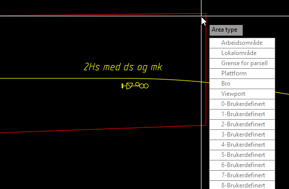
An Area type is specified after the area boundary is defined.
RC-CREATEDEFINITIONOFNETWORKASSETSMAPPING
Compares the contents of the selected Definition of Network Assets (DNA) file with the current DNA in computer memory, and lets the user decide how to translate old DNA data into their new property names and enum values.A mapping tool opens and displays a color-coded view of all DNA differences.
Select an object type from the left pane and select a red or yellow property to map in the right pane. Green properties have no change and should not be touched. New properties with no precursor shall be tagged “do not map”.
Properties that have merely changed name shall be mapped by selecting which new property has taken over the old property’s role.
If the attributes of an existing property are of enumeration type, and if the enum values have changed, then you must map enum by enum value for that property.
RC-CREATEPOINTOBJECT
Creates a new RailCOMPLETE object.The new object tries to attach itself to a nearby alignment, most often with a certain snap distance. Snapping can be toggled during insertion, and may also be overridden by moving the object after insertion.
ALIGNMENT AND POSITION
The alignment that a point object has attached itself to is known as the object’s “own alignment”. The object’s mileage is defined at insertion by its own alignment’s name and the resulting own alignment absolute position, measured at a straight angle from own alignment to the object’s insertion point in the XY plane. There is a unique correspondence between the object’s mileage together with its perpendicular distance from own alignment, and the object’s position in the XY-plane. The object’s Z-coordinate is made up of the object’s elevation relative to the local alignment elevation, and the own alignment’s actual Z-coordinate – i.e., the alignment’s elevation above sea level – at that mileage. The RailCOMPLETE Properties tool will show these position values at any time, as well as many other derived values, and lets you modify them through adding to, subtracting from or replacing the numerical values for mileage, reference mileage, distance from alignment etc.
COORDINATE SYSTEM
The end user of the entire model, at construction time, will interpret XY positions as points according to a certain mapping of the earth, for instance UTM-32. This mapping must be the same for all the drawings constituting a model. Likewise, the Z coordinate will be interpreted as an elevation according to a particular model of the earth’s surface.
REFERENCE ALIGNMENT
Nearby alignments often belong to a named alignment group, constituting a railway line. One of these alignments will usually be nominated as the “reference alignment” for the line as a whole. Each alignment has knowledge of its own reference alignment’s name at every alignment position. Thus, a point object has an alternative mileage definition, expressed as the unique reference alignment name and the reference alignment absolute position (rtap), measured at a straight angle from reference alignment to the object’s insertion point in the XY plane.
DIRECTION
In addition to a definite XYZ position in 3-dimensional space, a point object also has a rotation in the XY-plane. The Z-axis for a point object is always upright. Most point objects will automatically orient themselves along their own alignment. Most objects must be oriented up or down along the alignment, for instance optical signals. The direction of intended use for a point object can be changed during the insertion process, and later. Some point objects, such as cabinets, have four natural orientations, ‘up’ meaning that a driver running in the alignment’s ‘up’ direction will see the front door of the cabinet, and ‘down’ meaning that he will see the cabinet’s rear side. With a cabinet oriented in direction ‘both’, train drivers in both running directions will see the cabinet door, opening towards the alignment. With direction ‘none’, no driver will see the cabinet’s door since it opens away from the alignment.
OBJECT PROPERTIES
The object’s data fields are populated with initial values as defined by the corresponding definitions in the relevant administration’s Definition of Network Assets (DNA) file, bundled with your RailCOMPLETE installation. Data values may alternatively be defined with an individual script, which means that their definite values will be the result of a runtime evaluation and will be based on the object’s position and its relations to other objects. Such values defined by formulas are refreshed both at creation and later when the object is moved or otherwise changed, or when its related objects change. However, to be 100% certain, please refresh your objects explicitly before you export them to 3D, use them in a table etc.
POSITION IN DRAWING VS. “REAL” XY POSITION XY
The point object’s 2D symbol may be moved to an offset position from its real position in the XY-plane using the square grip, in order to tidy up a messy 2D drawing with overlapping symbols. A transient dashed line will indicate for you where the real XY position is at any time when you move the object around.
ATTACHING OBJECTS TO EACH OTHER
A point object may be attached to another point object. When selecting an object with an attachment, a transient arrow will indicate the direction of attachment. Such an object may inherit its “real” position from the parent object. A signal board will by default inherit its real XYZ position from a nearby foundation, to whom it is attached to as part of the point object creation dialog. This allows for a board tail to be drawn from the board’s 2D symbol to its foundation, making it graphically clear which running direction and side of alignment the board is meant for. Poles and signs are likewise treated. Boards can be stacked on the same pole by attaching the next board to the previous board. In such a case, the attachment tail is suppressed for the stacked board, and its real XYZ position is derived from the foundation at the bottom of the stack. The position inheritance can be modified at any time for any point object.
TEXT ATTRIBUTES
Many point objects need to be shown in 2D drawings with text attributes. These text attributes are defined in the DNA. Text attribute contents are driven by a dedicated data item found in the base class for the point object in question, or a custom attribute, as detailed in the DNA. There are commands available for modifying or resetting such text attributes, for instance rotating texts along a alignment or along a paper drawing’s borders.
3D VISUALIZATION
Most point objects have an associated 3D model that can be generated using the Export3D command. Using the Properties or Object Manager tools, the 3D model can be offset from the point object’s insertion point with the 3D Offsets X/Y/Z, as well as rotated in space with the 3D Pitch/Roll/Yaw data items, accessible both in the Properties and the Object Manager tools. This allows for instance a wayside board to be drawn vertically above its foundation, or sideways towards the alignment when being wall-mounted in a tunnel. To allow for quick 3D modeling of poles and masts, every point object can use horizontal or vertical pole routing at 3D export time. Please refer to the Export3D command reference documentation.
RC-CREATEPREDEFINEDTABLE
Command to create a predefined table based on type and variant.RC-CREATETABLE
Creates a new RailCOMPLETE table.Create a variety customized tables by selecting objects and parameters. Values can also be derived from other objects by using LUA script.
RC-DETACHXREF
Detach Xrefs from RailCOMPLETE document.RC-DISABLECONTEXTUALRIBBONTABS
Disables the table and xref ribbon bar.RC-DISPLAYBRAKINGCURVEEBICAB700
Displays braking curve information, based on Ebicab700 ATC braking curve parameters.Moving the CAD cursor along the path shows instantaneous values for time, deceleration, speed and distance (does not apply to V1.0). Documentation of the braking curve parameter is echoed to the CAD system’s text window.
The braking curve information can be copied to the drawing.
RC-DISPLAYGAUGE
Displays a loading gauge or structural gauge visualized as a simplistic moving train.You may annotate your drawing by copying the ‘train’ in 2D and 3D to the drawing at the current alignment cursor position.\n\n The ‘train’ is made up of ‘cars’ consisting of a gauge profile of your selection which is sweeped along a straight car axis with the car length that you specify.Each car is identically made up of a tail part, a between-the-bogies part and a nose part, whose lengths you can alter.The ‘cars’ follow the alignment’s track axis as you move your cursor. If the alignment has vertical profile and / or cant data, then each car is pitched and rolled around its midpoint between bogies at track axis elevation (i.e.including gradient and cant effects). The separation between ‘cars’ is kept constant along the alignment axis from one car’s bogie center to the closest neighboring car’s bogie center.The default car separation is tail + nose + 1 meter.
RC-DISPLAYSIGHTAREA
Displays the area, along the alignment towards one or more objects, that must be free from major obstacles in order to guarantee free sight for the locomotive driver from any distance up to the sighting distance requirement.The sighting distance is given by the @Sight property in the object (meters), or the user is prompted for a sighting distance requirement if the object type does not possess the @Sight property.
If multiple paths of the required length exist towards the object, then the combined sight area for all of these is shown. The presence of a 3D model for the object may influence the sight area calculation, see 3D models.
RC-DISPLAYSIGHTLINE
Displays a line of sight from an observer located in the middle of a track towards one or more objects.The sighting distance in 2D is calculated disregarding the Z coordinate. The sighting distance is specified in the object’s @Sight property in meters. If the object does not possess the @Sight property, or if @Sight is zero, then the user will be prompted for a sighting distance. Sight lines may be computed for multiple objects, where the user-entered sighting distance requirement will be assigned temporarily to those who have zero or lack entirely the @Sight property.
If multiple paths of the required length exist towards an object, then sight lines from all possible observer locations are shown.
If an object has a 3D model containing meta-information about the interesting parts of an object, then the geometrical center of this interesting area will be used as sight line target instead of the object’s insertion point.
Note that an object’s 2D symbol may be graphically displaced in relation to its insertion point, the ‘real’ XYZ-position. This can be seen as a dashed line from a selected object to its insertion point. The sight line calculations are unaffected by such ornamental 2D symbol displacements. The graphical displacement can be manipulated using the object’s square grip point.
RC-DISPLAYTRAINENVELOPE
Calculates the outline or "envelope" of a train car passing through the infrastructure.The user is asked to select a track, and enter car dimensions.

The envelope is shown as purple lines in the drawing.
RC-EDITPROPERTY
Sets a property to a given value for one or more RailCOMPLETE objects.RC-EDITTABLE
Edit an existing RailCOMPLETE table.RC-EDITTEXTATTRIBUTES
Tool for editing and manipulating text attributes for RailCOMPLETE object(s)After choosing which objects and attributes to edit, you are presented with multiple options for editing different aspects of the selected text attributes, such as text height, text style, the oblique angle etc. You can rechoose which attribute to edit in the selected objects at any time. See help for more specified information on each functionality.
ATTRIBUTE
Allows for reselection of which attribute to edit.
HEIGHT
Sets a new text height for the selected attribute(s). Accepts positive and non-zero numbers as input.
COLOR
Sets a new color for the selected attribute(s).
OBLIQUE
Sets a new oblique angle for the selected attribute(s). Input is interpreted as degrees. Accepts input between -85 and 85.
JUSTIFICATION
Sets a new justification for the selected attribute(s). Choose between TL (Top Left), TC (Top Center), TR (Top Right), ML (Middle Left), MC (Middle Center), MR (Middle Right), BL (Bottom Left), BC (Bottom Center) and BR (Bottom Right).
STYLE
Sets a new text style for the selected attribute(s). When selected opens a window containing a list of all the text styles in the drawing along with a search bar. Select the desired style with a left mouse double-click or Enter.
LAYER
Sets the layer for the selected attribute(s).
ORIENTATION
Orients the selected attribute(s). Options are Alignment, User, World and Current View, along with the option to specify the rotation point of the attributes (either its position or its alignment point). After aligning the attribute(s) to the given choice, the option to add an extra angle is given.
DISTANCE
Moves the selected attribute(s) to a specified distance from its alignment. The command finds the point on the alignment closest to the text attribute(s) and moves the attribute(s) to a point along this direction specified by the given distance. Negative input will place the attribute(s) on the oppsite side of the alignment. If an attribute is placed on its alignment or has no alignment, the command does nothing.
SCALE
Scales the size and relative position(s) of the selected attribute(s). The command first lets you choose a scaling factor for text height and relative distance. The height and positions are then multiplied by this scale factor. The position can either be changed according to the base attribute or the object.
MOVE
Move the selected attribute(s) with a specified offset.
RESET
Resets the selected attribute(s) to its specification in the DNA. Choose between a "hard" reset that includes both the properties (height, style, layer etc.) and the position(s) of the attribute(s), or a "soft" reset that keeps the current position(s) of the attribute(s)
MATCH
Matches properties in attribute(s) on target object with the same name.
EXIT
Exits the command and saves the changes to the database.
RC-EXPORT3D
Exports selected objects to 3D, based on information found in the corresponding 2D object.Output may be directed to a layer in the current drawing or to an external drawing file. 3D models are fetched from one or several folders holding 3D object models. 3D models may contain a polyline stub and a circle, representing a default part of the object's pole, useful for signas and boards. Automatic pole routing is available as either horizontal end or vertical end. Alignments may be expressed in 3D either as a centerline or as succession of 3D blocks representing a repeated object (such as a cable duct element or a sleeper with 60 cm of rails etc.) Object annotations and alignment mileage annotations are available. 3D model complexity may be reduced using the Level Of Detail (LOD) algorithm, which considers the object's volume and either ignores it (small volumes) or replaces it by a box of similar volume.
RC-EXPORT3DUSINGCURRENTCONFIG
Exports selected objects to 3D using the previously saved settings in the Export 3D command.RC-EXPORTALIGNMENTSTOLANDXML
Exports RailCOMPLETE document to LandXML format.RC-EXPORTREFERENCEALIGNMENTDEFINITIONS
Export reference alignment definitions from current AutoCAD document.RC-EXPORTTABLETOEXCEL
Export selected tables to ExcelRC-HELP
Opens a web browser with RailCOMPLETE help resources.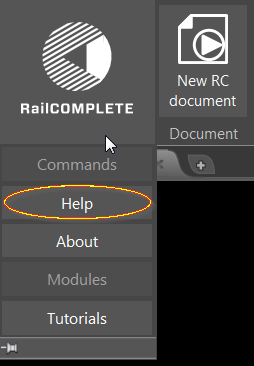
The help window can also be opened by pressing F1 when the mouse pointer is hovered over an icon.
RC-IMPORTALIGNMENTSFROMLANDXML
Import alignments from LandXML file(s) to the RailCOMPLETE document. The command can either import each alignment as new objects or update existing ones.RC-IMPORTPOLYLINESFROMDWG
Imports polylines (Polyline, Polyline2d, Polyline3d, Line or Arc) from a DWG file to the current document. The command can take a (partial) layer name to filter the source objects. The polylines can thereafter be converted to alignments using the RC-CREATEALIGNMENT command.RC-IMPORTREFERENCEALIGNMENTDEFINITIONSFROMXML
Imports reference alignment definitions from an XML file.RC-JOINALIGNMENTS
Joins two or more RC-ALIGNMENTS. Erases the old alignment, transfers all alignment data, and attached objects to the new alignment.RC-LOADDEFINITIONOFNETWORKASSETSFROMDRAWING
Loads the Definition of Network Assets (DNA) saved in the drawing and sets it as the current active DNA in computer memory. Consider backing up your drawing first.The current DNA in memory determines how new objects are inserted into the drawing. Please note: When switching active document (CAD system drawing) to a RailCOMPLETE document, the DNA is automatically re-loaded from the drawing.
RC-LOADDEFINITIONOFNETWORKASSETSFROMXML
Loads new Definition of Network Assets (DNA) from the selected XML file and sets it as the current active DNA in computer memory, without affecting the stored drawing or the objects’ current status in memory. Consider backing up your drawing first.The current DNA in memory determines how new objects are inserted into the drawing. Please note: When switching active document (CAD system drawing) to a RailCOMPLETE document, the DNA is automatically re-loaded from the drawing.
Read more about objects, tables, styles, 2D symbols and Definition of Network Assets in the sections above.
RC-LOADRIBBON
Starts RailCOMPLETE ribbon menu.Use this command if the RailCOMPLETE ribbon menu does not show after AutoCAD start-up.
RC-LOADSTYLEDEFINITIONSFROMXML
Loads StyleDefinitions from the selected XML file. Consider backing up your drawing first.Style definitions describe the details of alignment annotations, CAD system layer properties, fonts, linetypes etc. The administration’s default style definitions file came with the installation of RailCOMPLETE. Loading a different style definitions file will modify the appearance of several RailCOMPLETE tools as well of the objects created thereafter.
RC-LOADSYMBOLLIBRARYFROMDWG
Deletes all 2D symbols from the current drawing and loads new symbols from the selected DWG file. Consider backing up your drawing first.A 2D symbol library is a file with CAD system blocks. A default library comes with the installation of RailCOMPLETE, one for each represented railway administration.
Loading a different symbol library will modify the appearance of both existing and new objects. Loading a symbol library which is incompatible to the drawing’s current Definition of Network Assets (DNA) gives unexpected results and may destroy your drawing irreversibly. Updating the symbol library also resets the list of drawings to ignore when "Ignore Missing Models" is turned on in 3D export.
2D symbols act as visual placeholders in your drawing, representing point objects. The symbols’ CAD system block names must correspond to the names used in the DNA for each variant within an object type declaration.
2D SYMBOLS USUALLY CONTAIN GRAPHICS ON SEVERAL CAD LAYERS
A symbol will be included in a unique CAD system anonymous block and assigned to a specific layer at its object’s creation, along with possible CAD system text attributes declared in the DNA for the relevant object type. Inside a symbol’s CAD system block there may be components which reside on other layers. Such CAD system layers can be turned on or off to display various characteristics of a symbol, e.g. “track appearance”, “signaling appearance” or “catenary appearance” when dealing with a symbol for a switch. The coloring of symbols is manipulated by several tools within RailCOMPLETE.
2D SYMBOL PARTS
The anonymous block which is instantiated for a given object type and variant at the object’s creation may contain several other drawing elements along with the basic 2D symbol. These drawing elements are also blocks, to be found in the symbol library file. E.g., “insertion point” showing where the local “0,0” block insertion point is, as well as several “magnetic point” blocks with suitable captions placed inside the object’s anonymous block. These “magnetic points” are handy for clicking other objects at certain specified positions, e.g. predefined positions for isolated joints, point machines, tongue rollers etc. in a switch symbol.
CHANGING 2D SYMBOL WHEN VARIANT IS CHANGED
Changing an object’s variant will usually result in a change of 2D symbol, e.g. changing a 3-light main signal into a 4-light signal. The selection process and correspondence between object types, variants and their symbols are defined in the DNA.
TEXT ATTRIBUTES IN 2D SYMBOLS
CAD system text attributes can be defined in the DNA for every object type and variant. Each such CAD text attribute is linked by attribute name to one of the object’s generic or custom properties. The current value of that property is displayed along with the 2D symbol, and is refreshed whenever there is a change in that property. The default position for each text attribute within the object’s anonymous block is defined in the DNA. There are several methods available for modifying the position, orientation and appearance of such text attributes after the object has been created.
RC-MANAGEALIGNMENTS
Toggles the Alignment Manager tool on/off.Alignments are all sorts of curved-line objects in 3D space, such as tracks, catenary wires, cables, cable ducts, roads, hand-rails etc. An alignment must have a geometrical description in the XY plane. It may have a profile description (vertical), defining the Z coordinate for point on the alignment (otherwise it will implicitly be zero). Positions along the alignment are measured from start to end in the XY plane. Additionally, alignments may have cant information, defining a rotation at every position. The Alignment Manager lets you view and to some extent also add, delete or modify information relative to alignments.
RC-MANAGEDRAWINGLIBRARY
Manage layer preferences.Manage Drawing Library is a tool to modify layer preferences. The tool scans selected drawings for layers, and list the layers with their properties. The layers can be grouped and assigned layer properties like color, transparency, line type etc.
The Manage Drawing Library can be used to assign source and target layer for 3D export.
RC-MANAGELICENSE
Opens the RailCOMPLETE license manager.Use the license manager to enter new license code or to order new license.
RC-MANAGEOBJECTS
Toggles the Object Manager tool on/off.The Object Manager is organized somewhat like a spreadsheet, presenting objects row by row, and their properties column by column. You may edit, copy-paste-autofill, search and replace values, you may filter and sort object rows, and you may add, omit or reorganize property columns. The object manager’s contents can be exported to Excel, or inserted as a CAD system table into the drawing, for further refinement there. You may target objects in the Object Manager and zoom to them in the drawing, or you may select objects in the drawing and open the Object Manager with focus on that object.
The Object Manager is organized somewhat like a spreadsheet tool, allowing you to hide and unhide rows and columns through a variety of intuitive techniques. You can search, sort and filter.
You can create, save and retrieve custom filters for later use or for sharing with other users.
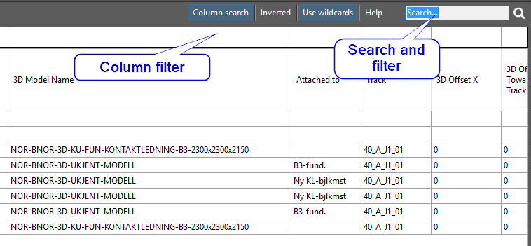
You may easily switch between your CAD system’s model space and the Object Manager. The model space, the Object Manager and the RailCOMPLETE Properties tool are always synchronized. Objects may be selected in model space and acted upon in the Object manager, and vice versa.
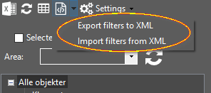
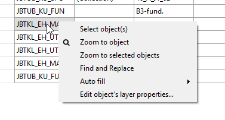
A group of objects may be selected using the Object Manager or model space and then acted collectively on as a group using the Properties tool. You may set up filtering and sorting and then single-step through the resulting objects one by one, while you zoom to the current object in model space - useful for a quick assessment of your objects.
OBJECT CATEGORY BROWSING
In the left part of the Object Manager window there is an object category browser, letting you turn on or off whole groups or subgroups of objects. This nomenclature has been defined in your railway administration’s Definition of Network Assets (DNA) file.
AREAS
In the upper left part of the Object Manager there is an Area reference field. When this field is non-empty, only objects being captured by that RailCOMPLETE area are subject to be shown or further filtered.
SELECTED IN DRAWING
Alongside the Area field, there is a check-box for “Selected in drawing”.
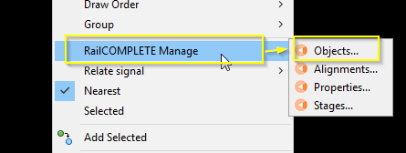
By checking this box, the current filtered set of objects in the Object Manager is further narrowed down to only those objects that are also selected in model space.
SELECTION AND MARKING
We distinguish between SELECTION and MARKING. A *selected* object means an object that is part of the CAD system’s current selection set, normally being highlighted with grips in model space. A *marked* object means an object with one or more gray-marked cells in the Object Manager window. Marked cells can be acted on in the Object Manager, but the CAD system has no notion of marked objects. Marking of objects is in use e.g. when picking out cells for Auto Fill or for narrowing down the current filter (buttons on the lower right).
MODIFYING CELL VALUES
Modifying a cell value can be done either through direct data entry, or through the Search and Replace tool, or the Auto Fill tool. Cells that are permanently grayed down are non-editable. The reason may be that the objects containing these cells reside in a cross-referenced file (XREF), or that the object’s CAD system layer is locked against editing. Cell values may be modified even if the CAD system layer that the object resides on is frozen or turned off, I.e. even if you can’t see the object in the CAD system model space window. CAD system layer properties can be modified from the Object Manager.
FORMULAS
Cell values may be driven by formulas, much as in a spreadsheet. You can start editing a cell by moving the object manager focus to the desired cell and then hitting F2 or double-clicking in the cell. A formula editor symbol appears to the right in the cell.
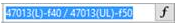
Clicking on this formula editor symbol starts the usual Lua formula editor tool.
LUA EDITOR
The Lua editor lets you define your formula using straight Lua syntax and a multitude of built-in specialized RailCOMPLETE functions. When you are satisfied with your formula, you save and close the editor to return to the object manager. If needed, you can write your formula – which may actually be a very large and complex Lua program - to a file for later use, or for sharing with other users.
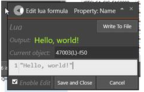
As an alternative to using the Lua editor tool, you can enter your formula directly in the object manager cell by starting with an equality sign ‘=’ followed by your formula.
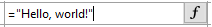
When saving and closing the Lua editor, or when pressing ENTER after in-cell editing, you will see that a formula symbol appears to the left in the cell.
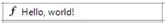
This (the “f”) shows that there is a formula behind the displayed cell value. Trying to type in a new cell value directly will no longer work, in order to protect your formula from being overwritten by accident. To edit the formula again, simply open the Lua editor or edit the formula directly in the cell. The other tools with access to properties (notably Manage Properties and Edit Properties) will also be blocked from accidentally overwriting a formula.
REMOVING FORMULAS
In order to remove a formula, you re-enter cell edit mode and replace the Lua formula with an entirely blank formula. Alternatively, you may right-click and use the “Replace formula with cell value” function. The previously shown value – the result of the formula – will now replace the formula. If the formula previously had an error or evaluated to a blank cell, then the cell value will now be empty.
DRAWING ATTENTION TO A VALUE – WARNINGS AND CHECK MARKS
If there is an error in a formula, then the Lua editor will warn you and also help you find the location and the cause for the error. In many cases, you will see that warning triangle appears in a cell. The reason may vary, but this indicates a problem, such as missing or bad input values to the formula. In order to make a formula return a value x and at the same time show the warning triangle, use this Lua statement: “return x, _warning” instead of just “return x”. You may return any of the following attention symbols: “_warning” (a warning triangle), or “_ok” (a check mark).
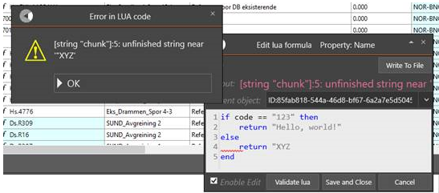
Formulas with Lua syntax errors show up in the object manager cell as blank cells, but with a warning sign along with the formula symbol.
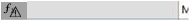
EXPORT OBJECT DATA TO EXCEL
The Object Manager allows for easy export to Excel. Set up your column selection by clicking in the top row and adding (unhiding) or deleting (hiding) columns. Drag columns sideways to organize your view as needed. Add area, filters and search patterns to narrow down the row selection. Then apply sorting by clicking on the relevant columns in the reverse sorting sequence. Click on the Excel export button, then the current view is exported to a new spreadsheet including column titles and respecting the sorting order.
CREATING TABLES FROM THE OBJECT MANAGER
The Object Manager is also ideal as a flying start for producing high-quality tables. Set up columns and rows as for the Excel export, then click on the RailCOMPLETE Table button. The RailCOMPLETE Table Manager tool opens, letting you refine the table definition further, save the table definition, and finally create the table in model space. Export from this refined table definition is then available from the Table Manager.
RC-MANAGEPROPERTIES
Toggles the Properties Manager tool on/off.The Properties Manager displays property names and values, line by line. Objects which are currently selected in the CAD system will be presented with “*VARIES*” instead of a specific value if two or more object’s values differ for a certain property. A property’s value may be the result of an underlying formula, which is indicated with a formula symbol to the left of the evaluated value (or *VARIES*). If more than one object has been selected and there are different formulas for a certain property, then an asterisk “*” will be shown instead of the formula symbol, also when the formulas all evaluate to the same value. See also the Edit Property command.
RC-MANAGESTAGESUSINGLAYERNAMES
Provides an interface for turning the CAD system layers on and off in order to display stage dependent drawing details for objects that reside on the affected layers.Objects may be RailCOMPLETE objects or any type of CAD object (circle, line, block, leader, text, XREF etc). Specify the stage pattern as either a - stage pattern, or as a stage pattern, with user defined prefix, entering/leaving infix and suffix patterns, number of digits used for denoting main and sub stage numbers, as well as a user defined main/sub stage separator. For instance, the pattern “_MyPrefix_”, “2”, “.”, “2”, “-”, “_MySuffix_” refers to all layers whose names contain “_MyPrefix_##.##-##.##_MySuffix_”, where # denotes any single digit 0-9.
RC-MATCHPOSITION
Matches the position of the selected objects to a target object, setting their mileage to the same value.You may direct the command to use the other object’s mileage as derived from its own alignment, or the other object’s reference mileage. You may choose to match the other object’s alignment name and XY-position without altering Z, or you may match “everything”, i.e. alignment name and XYZ coordinates.
RC-MOVESELECTIONALONGPATH
Move selection of objects along a path, based on input parameters.Items can be moved along (reference) alignment.
RC-MOVETEXTATTRIBUTES
Function for quickly moving all the text attributes for the selected object(s)The functions prompts the user for two points, and moves all text attributes for the selected offset with an offset corresponding to the vector between the two points. A transient jig is shown throughout to illustrate the changes in attribute positions. If no selection set was active at call, the command prompts the user for a selection of objects, with an option for "Select all".
RC-OFFSETALIGNMENT
Create or modify alignments by curve offset, similar to the AutoCAD OFFSET command. Offset distances work separately in the vertical and horizontal planes.First, offset command parameters are given:
- Apply: finish parameter selection and proceed to picking the through point or the offset direction.
- Offset: offset distance. Must be a positive number, or the 'Through' value. The offset direction or through point is picked in the next step.
- Z offset: vertical offset distance. Positive numbers indicate upwards (positive Z) offset, while negative numbers indicate downwards (negative Z) offset.
- Erase: if set to yes, the original alignment is erased after the new offset alignment has been created.
- Layer: 'Current' uses the current insertion layer of the drawing, while 'Source' preserves the layer of the original alignment.
Next, the through point or the offset direction is chosen by pickcing a point. A new alignment is created.
The type of the resulting alignment is the same as the original alignment. To create an alignment with another type, start this command instead by using RC-CREATEALIGNMENT (available in the ribbon menu) and choose the Offset command after selecting a type.
RC-OPENLOGFILE
Opens the log file.RC-OPENXREF
Opens the Xrefed RailCOMPLETE document in a new window.RC-P000002-UPDATETABLES
Patch which replaces .attachment/.area with attachment/area reference.RC-P000004-FIXMILEAGE
Patch which moves mileage data (mileage at start and mileage changes) from railML to LandXML element.RC-P000006-CHANGEDATATYPEOF68SIGNALS
Patch which changes railML datatype of NO-BN “Signal 68” objects from tSpeedChange to tSign.RC-P000007-RENAMETRACKTOALIGNMENT
Migrate data after renaming track=>alignment throughout the code.RC-P000010-MOVEOFFSETFORMULAS
Patch which replaces formulas on 3D offset properties to correct sub properties.RC-P000011-RENAMEDECORATIONSLAYERS
Patch which renames layers containing "DECORATIONS" with "ANNOTATIONS".RC-P000012-FIXCONNECTIONS
The modeling of connections has been refactored. Connections used to be modeled the railML 2 way, storing connections in both tracks and switches/crossings. The patch transfers the connection data from the railML fields, now storing connections on the 'connection objects' (switches, crossings, continuations, etc).RC-P000013-CHANGEDATATYPEOFTVDSECTIONS
Patch which changes railML datatype of NO-BN “Signal 68” objects from tSpeedChange to tSign.RC-P000014-FIXSIGNTAILS
Patch which changes railML datatype of NO-BN “Signal 68” objects from tSpeedChange to tSign.RC-P000015-FIXSECTIONOBJECTSTYPENAME
Patch to fix section object type nameRC-P000016-REMOVEDEPRECATEDCUSTOMATTRIBUTES
Patch to remove deprecated custom attributesRC-P000017-UPDATETEXTATTRIBUTESINBALISESYMBOLBLOCKS
Patch tup update text attributes in symbol blocks for balises.RC-P000018-FIXSIGNMAGNETPOINTS
Rotates magnet points to symbol block rotation.RC-P000019-UPDATETABLESCOLUMNSPECIFICATIONFORMAT
Patch for updating column specification definitions.RC-P000020-FIXMASTETABELLTYPENAME
Patch to fix Mastetabell object type nameRC-P000021-FIXSIGNOFFSETVECTORS
Rotates magnet points to symbol block rotation.RC-P000022-FIXSIGNMAGNETPOINTS2
Rotates magnet points to symbol block rotation.RC-P000023-FIXMHENGEMASTTYPENAME
Patch to fix Hengemast object type nameRC-P000024-FIXBARDUNERTYPENAME
Patch to fix Barduner object type nameRC-P000025-FIXMILEAGEOFFSET
Shift positions of vertical, cant and mileage elements by the value in StartMileage.RC-P000026-FIXMILEAGEPARENT
Remove mileageParent.NodeSelector element if its value is 'closest'RC-P000027-FIXKLMASTTYPENAME
Patch to fix KL-mast object type nameRC-P000028-MAPSUBPROPERTYFORMULAS
Maps formulas on depricated properties to correct sub properties.RC-PEEKATDEFINITIONOFNETWORKASSETS
Peek at the XML code defining how new objects are created, interrelated and represented symbolically.The Definition of Network Assets XML file contains an DNA identification header and information about fonts, linetypes, default file system folders, as well as detailed descriptions of object types needed for a given railway administration, with symbols, properties, methods, relations and create-time default values.
Although you may modify a drawing’s “genetic information” using this tool, it is strongly advised not to do so unless you are an expert user.
Please consult the RailCOMPLETE Agent’s User Manual.
Several built-in generic object types are available with a multitude of properties and methods. Among the common basic properties, you will find the object’s id, name, description, position along a specified alignment, its relative elevation and its distance to this alignment. An alignment may be a track’s center line, a road center line, a cable duct, a catenary wire etc. The built-in methods can manipulate the object further in 3D space, associate it with a 3D model, draw poles between boards and foundations etc. There are also methods for obtaining all sorts of information from the alignment that a point object has been connected to, such as elevation, gradient, curvature and cant.
You may peek at zero-dimensional point objects, one-dimensional alignment objects and two-dimensional area objects.
Specialized objects are declared in the DNA, starting out with one of the generic object types available. The object type declaration adds as many custom properties and methods as needed. Each object type declares its own Attachment Category and its affinities for other such categories, allowing such an object instance to attach to another suitable object and thereby become part of a daisy-chain of physical object positions in 3D space.
Each object type also declares its own Relation Source Space, allowing it to be logically related to other objects. The DNA can hold an arbitrary number of binary relations.
Every object type can be declared with several Variants, each with its own recognizable 2D CAD symbol. For each variant there may be several custom properties influencing the object’s description, such as width, length, height, number, color etc. Each relevant combination of custom property values can be associated with a 3D model for this object.
When an object is created, there may be standard values declared in the DNA which are assigned to object properties. E.g., this may be a board’s standard elevation above its foundation, or an axle counter’s standard placement at +/-0,75m from track center line, etc.
In many cases there are no definite values to standardize on in the DNA, but there may still be standard methods. E.g., a balise will always be mounted in the center track, but it must be lifted to half of the local track superelevation, as well as pitched with the local track gradient and rolled with the local track cant. In switches you may even find balises that are yawed in relation to their track’s center line, because the sleepers may follow the switch’s other leg’s orientation. In such a case, the DNA will declare a Formula to be evaluated for the relevant property, just as you would do in a spreadsheet. The superelevation formula would read something like “getAlignmentInfo().Superelevation/2000”, assuming that superelevation is expressed in millimeters, and be applied to the object’s Z-coordinate property.
RC-PEEKATOBJECTDEFINITION
Peek at the XML code behind a RailCOMPLETE object.Although you may modify an object’s stored definition using this tool, it is strongly advised not to do so unless you are an expert user. Please consult the RailCOMPLETE Agent’s User Manual.
RC-PEEKATTABLEDEFINITION
Peek at the definition behind a RailCOMPLETE table.Although you may modify a table’s stored definition using this tool, it is strongly advised not to do so unless you are an expert user. Please consult the RailCOMPLETE Agent’s User Manual.
RC-QUANTIZEPOSITION
Quantizes the selected object’s absolute position.Specify either the object’s alignment or its reference alignment mileage to be quantized. The quantization value may be any number Q, mapping a value V into floor((V + Q/2)/Q)*Q. For instance, V=16.221 and Q=2.5 will map to 15.0, whereas V=16.267 and Q=2.5 maps to 17.5.
RC-QUERYOBJECT
Opens a Query Object window where you can access all drawing information that is linked directly or indirectly to the selected object.The Query tool uses the built-in Lua programming language in order to access information from the drawing with the currently selected object as a starting point. For instance, let’s assume that the object that was selected is a turnout with “512” as its @code property value. Typing code will show 512. Typing ”V.”..code will show V.512, etc. Note that Lua is generally case-sensitive.
RC-QUICKSELECT
Quick SelectAdd objects to the current selection set. Select objects based on the properties @Name, @Id, @Code, @Type, @Position. With Position, you will be prompted for XY coordinates as well as a radius. With V1.0, coordinates must be entered as World coordinates.
RC-REFRESHOBJECTS
Updates attachments and refreshes property values derived from attachments.Note that refreshing an object may affect other objects because they might depend on each other. The refresh depth can be adjusted.
RC-REFRESHTABLE
Refreshes a RailCOMPLETE table.The current table settings, including object filter, the Lua formula for each column, column widths, column title, title wrapping etc are evaluated over again. Please note that the objects which constitute the rows in a table are not themselves refreshed, so be sure to refresh all the concerned objects before you refresh a table.
RC-RELATIONUPDATEDEPTH
Set the depth in of which objects will be updated when an object is changed. The depth of an object is the number of relations to get to the changed object.RC-RELOADALLXREFS
Reloads all Xrefs.RC-RELOADOBJECTMANAGERDATA
Reloads all objects in Object Manager.RC-RELOADXREF
Reloads selected Xrefs.RC-REMOVEINVALIDLUAEXPRESSIONS
Removes LuaExpressions with names that does not match a property name.RC-REMOVEPATHS
Removes all paths in drawing.RC-REMOVEUNKNOWNDATA
Removes any railML "any" elements/attributes from document.RC-REORGANIZERIBBONTODEFAULT
Rebuilds the ribbon and put panels back to the default configurationUse this command if the RailCOMPLETE ribbon panels are in incorrect order.
RC-RESETALLFORMULAS
Updates the Lua formulas in the selected objects according to their object type definition. Model checks will also be redefined.RC-RESETLAYERS
Updates the layer properties for all layers affected by the selected 2D symbol(s), resetting them according to the current document’s Definition of Network Assets.Layers which are unaltered will retain their current on/off and thawed/frozen states. Layers which are (re-)introduced will be set to their default state according to the Definition of Network Assets.
RC-REVERSEALIGNMENT
Reverses the selected alignments.RC-RUNPATCHES
Lists available patches that needs to be executed on the current drawing.RC-SAVEDEFINITIONOFNETWORKASSETSINDRAWING
Saves the current Definition of Network Assets (DNA) held in memory to the drawing’s header data structure and to the drawing’s individual objects, but without mapping deprecated property values to updated values. Consider backing up your drawing first.The current DNA in memory is made permanent in the drawing and in its objects. The DNA will reappear in computer memory as an active DNA each time the drawing is closed and re-opened, and each time the user switches active document and switches back to the RailCOMPLETE drawing.
Please note that no property values are updated to new enumeration sequence values with this save DNA method.
If existing property enumeration values shall be changed to new enumeration values, and if new object properties and CAD text attributes are to appear in already created objects, then the “update DNA” command must be used instead.
RC-SELECTBYHANDLE
Sets selection by given AutoCAD handle. Optionally zooms to object.RC-SELECTSIMILAR
Select all objects with the same types as already selected objects.RC-SETALIGNMENTREFERENCEPROPERTY
Set alignment reference for the selected point objects. The command allows the user to set specify the own alignment for objects and connection target for all connection objects.RC-SETBLOCKCOLOR
Lets the user set the color of a selection of blocksRC-SETDEFINITIONOFNETWORKASSETS
First time: Upgrades a plain DWG file to a RailCOMPLETE document. Subsequent use: Provides maintenance for the document’s Definition of Network Assets.Adds a RailCOMPLETE document header to the current DWG file.
Select the desired railway administration and Definition of Network Assets among the available choices.The Definition of Network Assets choice determines the kind of objects that can be inserted in a document, their properties, symbols, 3D models, relations etc.
Once the RailCOMPLETE document header has been added, the START-icon changes to the chosen administration’s logo.
RC-SETLAYERPROPERTIES
Manage AutoCAD layers for selected objectsRC-SETLENGTHPROPERTY
Adds an alignment property (service section, tunnel, bridge, platform or unprotected area) to the currently selected path (see RC-SETPATH).RC-SETLUATOOLTIPPOSITION
Set the position of the tooltip.RC-SETPATH
Sets the current path on alignments in RailCOMPLETE document.RC-SETPATHSFROMAREA
Set RailCOMPLETE path to intersection of area and selected alignments.RC-SETTINGS
Opens the settings window.RC-SHOW3DPREVIEW
Show transient 3D block references.RC-SHOWALIGNMENTGEOMETRY
Annotates transient alignment geometry markers along the selected alignments.RC-SHOWALIGNMENTMILEAGE
Annotates transient mileage markers along the selected alignments.RC-SHOWALIGNMENTNAME
Annotates transient alignment name markers along the selected alignments.RC-SHOWANNOTATIONINFO
Show extra information when hovering over transient annotations.RC-SHOWATTACHMENTLINES
Annotates transient connection lines between relations and attachments.RC-SHOWCONTEXTUALRIBBONTABS
Reloads the table and xref ribbon bar.RC-SHOWDISTANCETOALIGNMENT
Shows the distance from a selected point object to its alignment.If the «Ref» alignment button is active, the distance to the reference alignment is shown. If no point object is selected, the current CAD cursor’s position is shown.
RC-SHOWEARTHINGALIGNMENT
Annotates transient earthing lines between objects and their respective earthing alignment.RC-SHOWELEVATIONABOVEALIGNMENT
Displays the CAD cursor’s or a point object’s elevation above sea level.If a point object is selected, then its elevation is decomposed into the alignment’s elevation, the object’s relative elevation above the alignment, and the absolute elevation (which coincides with the CAD system Z coordinate). If no point object is selected, the current CAD system default Z coordinate is used as a basis. If the «Ref» alignment button is active, the elevation above the reference alignment is shown.
RC-SHOWFOULINGPOINTS
Annotates fouling points.RC-SHOWLAYERS
Shows or hides predefined layer groups. Layer groups are configured in the relevant administration’s DNA (not the AutoCAD layer manager groups). To delete, add or modify layer such groups, contact your local administrator or the relevant RailCOMPLETE agent.RC-SHOWMILEAGECHANGE
Annotates transient mileage change (aka «chain break») symbols along the selected alignments.RC-SHOWOBJECTTOOLTIP
Show a variety of custom tooltips displaying content made up from Lua formulas.RC-SHOWOWNALIGNMENT
Annotates transient connection lines between objects and the alignment they belongs to.RC-SHOWPOSITION
Displays the transient mileage indicator. Choose between reference, distance, elevation, quantize and bind mode. Click once to activate, double-click to deactivate. Click twice to disable.The mileage indicator line is a line being perpendicular to the alignment that the mileage cursor is currently following.
The little square symbol shows which alignment is currently used as data source.
The mileage shown is the same as the “own alignment mileage” for any object located on the mileage indicator line.
REFERENCE will toggle if the transient shows position in reference alignment as well as own alignment, indicated by a circle.
DISTANCE will toggle if the transient shows the distance from the cursors position to the active alignment.
ELEVATION will toggle if the transient shows the elevation of the alignment at the cursor's position.
QUANTIZE will toggle quantization of the position tool, locking the transient to whole increments (specified by the ShowPositionQuantizeRounding element in the DNA).
BIND will toggle if the position tool binds to the selected alignment.
See RC-BINDTOSELECTEDALIGNMENT
REFERENCE
See RC-SHOWPOSITIONINREFERENCEALIGNMENT
DISTANCE
See RC-SHOWDISTANCETOALIGNMENT
ELEVATION
See RC-SHOWELEVATIONABOVEALIGNMENT
QUANTIZE
BIND
See RC-BINDTOSELECTEDALIGNMENT
RC-SHOWPOSITIONINREFERENCEALIGNMENT
Triggers the “Reference” mode. The mileage cursor is split in a little circle following the “own alignment” and a square one for the reference alignment. Reference mileage is indicated whenever the Show Position (the mileage indicator line) has been activated.RC-SHOWPROFILE
Annotates transient profile markers along the selected alignments.RC-SHOWQUANTIZEDPOSITION
Locks the position of the position tool to the nearest multiple of a given number specified in the Definition of Network Assets.RC-SHOWREFERENCEALIGNMENT
Annotates transient reference alignments along the selected alignments.RC-SHOWREFERENCEALIGNMENTMILEAGE
Annotates transient mileage markers along the selected alignments, but only in the intervals where the alignment is its own reference.RC-SHOWRELATIONLINES
Annotates transient connection lines between relations and attachments.Double click toggles on/off the selected relation types.
Relation Lines: Annotates active relation(s) for the selected object(s).
Relation Texts: Annotates a tooltip with information about a relation when hovering over the relation transient.
Attachments: Annotates active attachment(s) for the selected object(s).
Alignments: Annotates the own alignment(s) for the selected object(s).
Sections: Highlights the selected section(s).
Earthing: Annotates the earthing alignment(s) for the selected object(s).
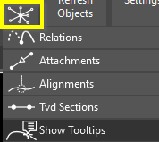
Choose between:
- Show Relation lines (this command)
- Show attachment lines RC-SHOWATTACHMENTLINES
- Show position in alignment RC-SHOWOWNALIGNMENT
- Show tvd section RC-SHOWSECTIONS
- Show Tooltips RC-SHOWRELATIONLINESTOOLTIPS
RC-SHOWSECTIONS
Annotates transient lines between delimiters in a tvd section.RC-SHOWTOPOLOGY
Displays topology data.An open-ended alignment (unconnected) is shown with an angle bracket ‘<’ or ‘>’. An alignment end which is connected to another alignment is shown with a circle.
To remove an existing alignment connection, use the RC-REMOVECONNECTION command.
RC-SHOWTUTORIALS
Opens the tutorials folder in file explorer.RC-SHOWTWORAILS
Toggles between a single-line and a two-line representation of all alignments.RC-SHOWVERSION
Prints the current RailCOMPLETE installation's version to the CAD command window.RC-SHOWVIDEOS
Opens the welcome window.RC-SHOWWARNINGINCADTEXTWINDOW
0: Write to command line 1: Show dialogsRC-SWITCHBLOCK
AutoCAD command to replace a BlockReference by another BlockReference with different BlockDefinitions, preserving as much text and position information as possible.RC-TESTMYCOMMAND
Tool to check the integrity of an Object Type Definition file.RC-UNLOADXREF
Unloads selected Xrefs.RC-UPDATEAREA
Reloads the Areas in the drawing.RC-UPDATEDEFINITIONOFNETWORKASSETSWITHMAPPING
Updates a RailCOMPLETE document to be compatible with a new Definition of Network Assets (DNA) version, according to the selected DNA and mapping files.The update process is based on an external DNA together with a mapping file describing how deprecated properties shall be mapped onto new or other existing properties. The mapping file also describes how predefined but deprecated values shall be mapped into new or existing other values.
The old and the new DNA must be intended for the same railway administration. A new DNA file can made with manual or tool-based editing of the old DNA file.
The mapping file must be created using the dedicated RailCOMPLETE command.